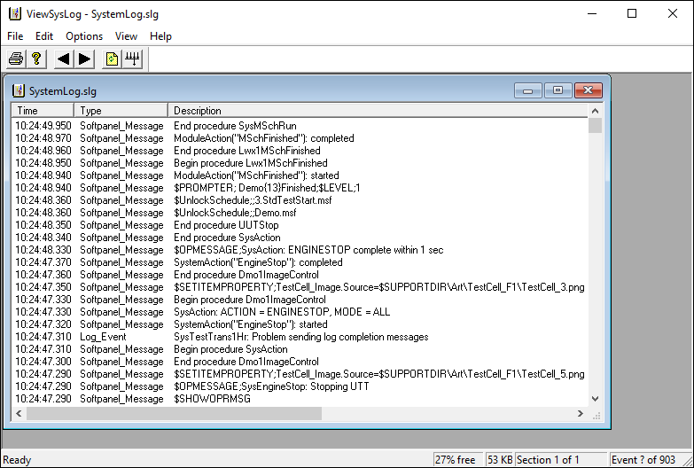
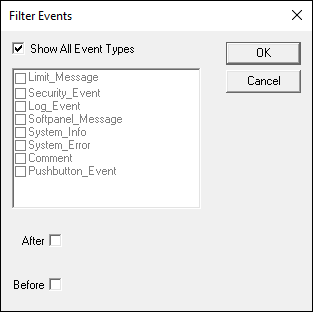

iTest User's Guide
The ViewSysLog window contains copies of messages sent to the Softpanel message window and the Prompter. It also records Softpanel button click events and user-entered comments.
Select Tools > System Log Viewer to open the ViewSysLog window.
ViewSysLog Window

Select Options > Time Format and select one of the following time formats for messages in the window:
Time Formats
| Format | Description |
| Whole | Displays time and date as YYYY/MM/DD HH:MM:SS.UUU. EXAMPLE: 2004/11/23 14:03:03.872 |
| Seconds: Microseconds | Displays time in seconds and microseconds. EXAMPLE: 1101236564.532000 |
| HH:MM:SS | Displays time in hours, minutes, and seconds. EXAMPLE: 14:03:51 |
| HH:MM:SS.UUU | Displays time in hours, minutes, seconds, and milliseconds. EXAMPLE: 14:03:00.062 |
To filter event types in the ViewSysLog window, select Options > Filter to open the Filter Events dialog box.
Filter Events

Select the events you want to view. Select Show All Event Types to view all events (this will gray out individual event types). Select After to display events that occurred after the specified date and time. Select Before to display events that occurred before the specified date and time.
Select File > Print to print the text in the ViewSysLog window.